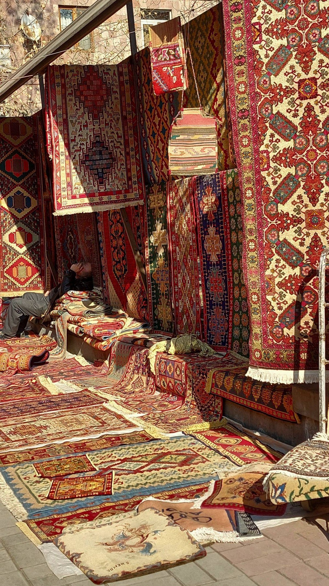

The Armenian Soul in Every Second
A luxury watch concept inspired by Armenian heritage, ornaments, carpets and craftsmanship.

Time Woven from Eternity
Vordan connects Armenian history with modern watch design.
Traditional carpet patterns and khachkar-inspired details are reimagined on watch dials and bracelets.
Our visual language combines deep burgundy, green, beige and noble gold.